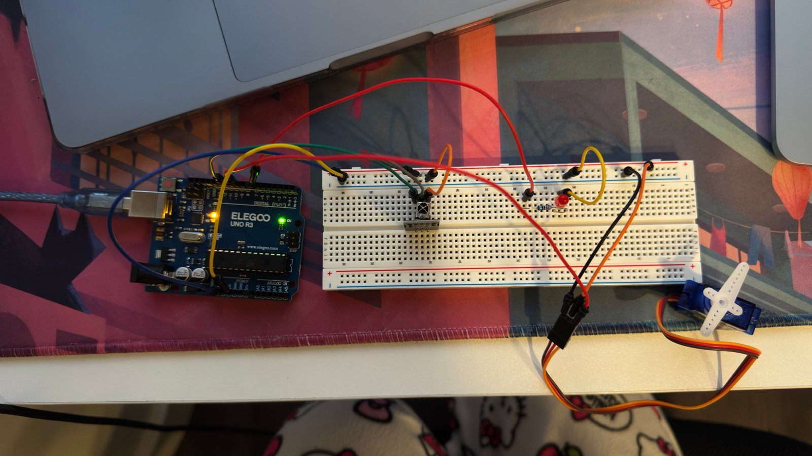
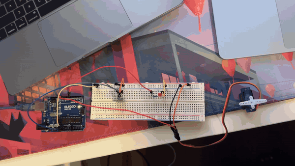
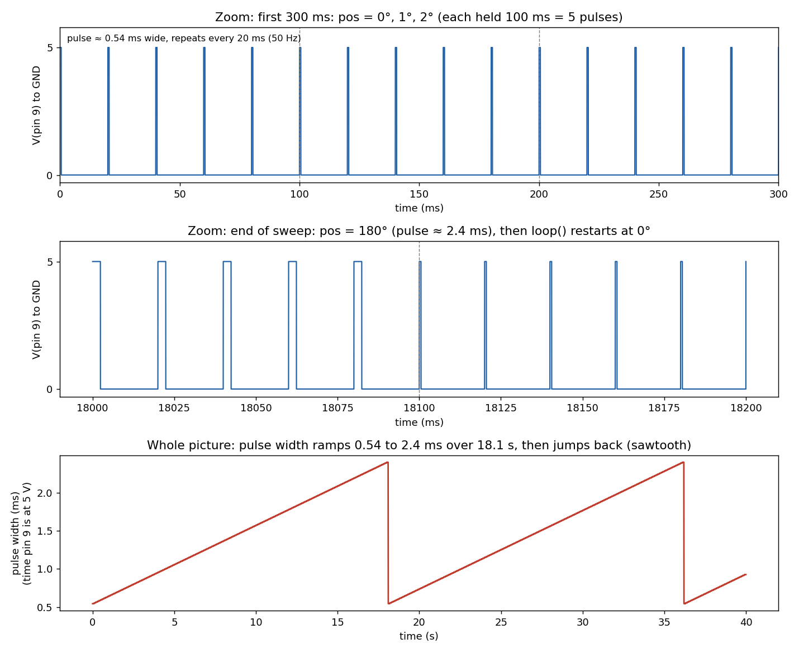

![Hand-drawn schematic of the whole circuit. The Arduino Uno on the left feeds a 5V line along the top and a ground line along the bottom. Pin 11 connects to the OUT (signal) pin of the IR receiver, whose VCC and GND go to the 5V and ground lines. Pin 9 connects to the servo (motor symbol M), which is also connected to 5V and ground. Pin 7 goes through R1, a 220 ohm resistor, and an LED to ground. Notes on the right list the input, output and feedback pins and show R min = (5V - 2V) / 20mA = 150 ohms, so 220 ohms is used, giving about 13.6 mA.](a4_schematic_hand.jpg)
HCDE 439 Physical Computing · an input and an output driven by Arduino libraries
A remote-controlled servo. Pressing 1, 2 or 3 on the IR remote turns the servo to 0°, 90° or 180°, and a red LED blinks every time the Arduino receives a signal. It uses two libraries: IRremote for the input (IR receiver) and Servo for the output (servo motor).

Why I chose the values in the code:
analogRead() (the IR receiver gives a digital signal), so no calibration is needed.// Include the IRremote library (install "IRremote" v4.x in the Library Manager); it decodes the remote's button signals
#include <IRremote.hpp>
// Include the Servo library (built in); it sends the pulses that set the servo's angle
#include <Servo.h>
// IR receiver's signal pin (OUT / Y) is wired to digital pin 11
const int IR_PIN = 11;
// Servo's orange signal wire is wired to digital pin 9
const int SERVO_PIN = 9;
// Feedback LED (with a 220 ohm resistor) is wired to digital pin 7
const int LED_PIN = 7;
// Create a Servo object to control the servo motor
Servo myServo;
// setup() runs once when the Arduino starts
void setup() {
// Start serial at 9600 baud so button codes show in the Serial Monitor
Serial.begin(9600);
// Start the IR receiver on pin 11
IrReceiver.begin(IR_PIN);
// Connect the servo to pin 9
myServo.attach(SERVO_PIN);
// Set the LED pin as an output
pinMode(LED_PIN, OUTPUT);
// Start the servo in the middle (90 degrees)
myServo.write(90);
}
// loop() runs over and over forever
void loop() {
// Check if the IR receiver has decoded a button press
if (IrReceiver.decode()) {
// Get the button's command code (Elegoo remote: 1 = 0x0C, 2 = 0x18, 3 = 0x5E)
int code = IrReceiver.decodedIRData.command;
// Print the code in hex so I can check which button was pressed
Serial.println(code, HEX);
// Button 1 pressed...
if (code == 0x0C) {
// ...turn the servo all the way to one side (0 degrees)
myServo.write(0);
// Button 2 pressed...
} else if (code == 0x18) {
// ...turn the servo to the middle (90 degrees)
myServo.write(90);
// Button 3 pressed...
} else if (code == 0x5E) {
// ...turn the servo all the way to the other side (180 degrees)
myServo.write(180);
}
// Turn the LED on to show a signal was received
digitalWrite(LED_PIN, HIGH);
// Keep it on for 100 ms so the blink is easy to see
delay(100);
// Turn the LED off
digitalWrite(LED_PIN, LOW);
// Tell the IR library to get ready for the next button press
IrReceiver.resume();
}
}


delay(100), which is 5 pulses. 181 positions × 100 ms = 18.1 s per sweep. When the for loop ends, loop() starts over at 0°, so the pulse width jumps back down, making a sawtooth (bottom graph).A wrong reading is a one-off outlier. Averaging would still let it pull the result off, so it's better to throw it out. Taking the median of 3 quick readings works: for the bad reading to win, two of the three would have to be wrong, which happens only about 0.03% of the time.
// take three readings in a row
a = read(); b = read(); c = read();
// keep the middle one; a single bad reading ends up highest or lowest and gets ignored
value = median(a, b, c);Another option is to ignore any reading that jumps further than the sensor could really change in one step:
// read the sensor
r = read();
// only accept it if it's close to the last good value
if (abs(r - lastGood) < MAX_JUMP) {
lastGood = r;
}
// use lastGood in the rest of the codeNoise that goes randomly up and down cancels out when you average several readings. Averaging N readings shrinks the noise by about √N, so 16 readings cuts ±10% to about ±2.5%.
// add up N readings
sum = 0;
for (i = 0; i < N; i++) {
sum = sum + read();
}
// the average is much closer to the true value
value = sum / N;Or keep a running average that smooths every new reading into the old one (a smaller number like 0.1 = smoother but slower to react):
// blend 10% of the new reading into the smoothed value
smoothed = 0.9 * smoothed + 0.1 * read();I used Claude to help choose the project, draft the Arduino sketch and its line-by-line comments, make the servo voltage graph for Question 1, draft my answers to Questions 2 and 3, turn my video into the GIF, and lay out this page in HTML. I built and tested the circuit, chose and confirmed the pins, and took the photos and video myself.
Reflection: I had to check calculations/graph and that my build matched the sketch. It was also useful to have Claude write in HTML for me.
Prompts I used: